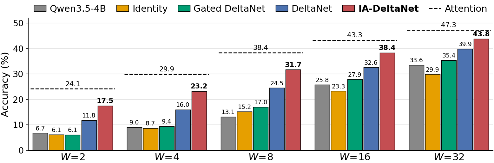
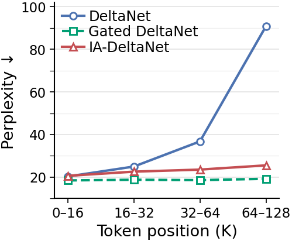
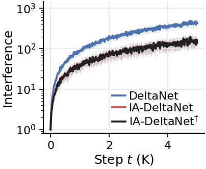
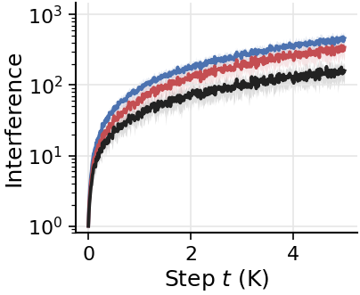
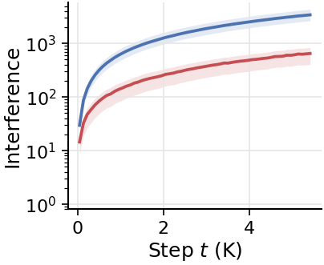
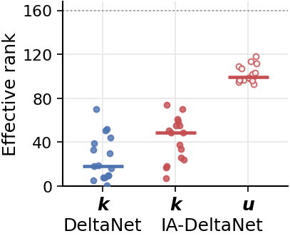

Abstract
Transformers excel at sequence modeling through attention, but their quadratic compute and growing key-value cache make them costly for long-range streaming tasks. Linear attention variants, such as DeltaNet, address this by reformulating attention as a recurrent memory equipped with an error-corrective update rule. However, we show that DeltaNet’s update rule induces unintended interference on past-key responses, as the correction signal leaks into every past key that is not orthogonal to the current one.
We propose Interference-Aware DeltaNet (IA-DeltaNet), which generalizes the delta rule by decoupling the key used for error evaluation from the direction along which the memory is updated. We formulate the choice of write direction as a constrained quadratic program that minimizes the total squared interference on past-key responses while exactly preserving DeltaNet’s current-key correction, and derive its closed-form solution as a preconditioned key obtained from the inverse uncentered covariance of past keys. To ensure scalability, we introduce a diagonal approximation of the past-key covariance, preserving the per-step efficiency and chunk-parallelizability of the original architecture.
On multi-query associative recall, interference-aware writing improves retention under high associative load. It also improves over recurrent-memory baselines as a bounded memory in a streaming VideoLLM, and substantially mitigates DeltaNet’s degradation under prolonged recurrent-state propagation in language modeling. These results indicate that explicitly accounting for past-key geometry offers an effective design principle for associative memory in linear-attention architectures.
Interference-Aware Memory Writing
IA-DeltaNet changes the direction of a memory write to disturb past associations less, while keeping the same correction at the current key.
Interference
A write along w disturbs past responses according to its overlap with previous keys kj. We measure this as the sum of squared overlaps:
Σt−1 is the accumulated uncentered covariance of past keys.
Constrained optimization
Choose the write direction with the least interference, subject to preserving DeltaNet’s correction at the current unit-norm key kt:
Closed-form solution
The inverse covariance downweights directions already occupied by past keys. The denominator normalizes the write direction so that the current-key correction stays unchanged.
In practice, a diagonal covariance approximation retains DeltaNet’s per-step efficiency and chunk-parallel computation.
Associative Recall
On multi-query associative recall (MQAR), the benefit grows as more key–value associations must fit into the recurrent state. At the highest evaluated load for width 128, IA-DeltaNet improves mean accuracy from 81.7% to 95.5%; the exact variant reaches 97.5%.
| Width | Pairs K | DeltaNet | Gated DeltaNet | OSDN | PDN | IA-DeltaNet | IA-DeltaNet† |
|---|---|---|---|---|---|---|---|
| 64 | 32 | 99.1 ±0.1 | 96.6 ±3.2 | 99.2 ±0.1 | 99.2 ±0.2 | 99.1 ±0.2 | 99.2 ±0.1 |
| 64 | 64 | 94.2 ±2.0 | 92.6 ±8.0 | 93.4 ±5.1 | 85.4 ±21.7 | 95.1 ±0.9 | 98.2 ±0.5 |
| 64 | 128 | 50.7 ±23.8 | 26.2 ±23.3 | 54.3 ±6.1 | 58.3 ±12.6 | 64.0 ±0.5 | 70.0 ±5.7 |
| 128 | 64 | 99.3 ±0.2 | 66.2 ±57.3 | 99.3 ±0.2 | 99.1 ±0.1 | 99.2 ±0.1 | 99.4 ±0.3 |
| 128 | 128 | 99.1 ±0.1 | 32.8 ±56.8 | 99.2 ±0.1 | 98.7 ±0.5 | 99.1 ±0.1 | 99.6 ±0.2 |
| 128 | 256 | 81.7 ±14.9 | 0.0 ±0.0 | 54.8 ±19.2 | 94.3 ±2.4 | 95.5 ±1.1 | 97.5 ±2.0 |
† Exact IA-DeltaNet uses the full past-key covariance. Unmarked IA-DeltaNet uses the diagonal approximation throughout this page. Bold indicates the highest mean in each setting.
Recall from streaming video
In VNBench, the memory processes the entire visual stream, while the LLM sees only the last W frame readouts. IA-DeltaNet outperforms DeltaNet and Gated DeltaNet at every evaluated window size, and comes within 3.5 points of the full-KV attention reference at W = 32.

Long-Document Language Modeling
We train on a 2K-token context and evaluate on PG-19 documents of up to 128K tokens, carrying recurrent states across consecutive chunks within each document.
DeltaNet and IA-DeltaNet start with similar perplexity, but diverge as the state is propagated. At 64–128K tokens, perplexity reaches 90.84 for DeltaNet and 25.51 for IA-DeltaNet.
Gated DeltaNet remains the most stable on this task. Forgetting and interference-aware writing address different parts of the update and can be combined.

Streaming Video Question Answering
We insert two memory blocks between the vision aligner and the LLM in Qwen3.5-4B. All fine-tuned models are trained with W = 8 visible frames. IA-DeltaNet achieves the best or tied-best accuracy among the evaluated fixed-size memories across these benchmarks and window sizes.
| Model | Memory | TempCompass | NExT-QA | MVBench | TemporalBench |
|---|---|---|---|---|---|
| Qwen3.5-4B | None | 66.3 | 72.7 | 58.7 | 58.0 |
| + Identity | None | 64.9 | 71.9 | 55.9 | 64.2 |
| + DeltaNet | O(1) | 66.4 | 73.5 | 58.3 | 64.6 |
| + Gated DeltaNet | O(1) | 67.5 | 73.6 | 58.1 | 65.4 |
| + IA-DeltaNet | O(1) | 70.1 | 76.9 | 59.2 | 65.4 |
| + Attention‡ | O(N) | 68.8 | 76.7 | 58.1 | 65.7 |
Memory cost is relative to stream length N. Identity removes the temporal mixer. Bold indicates the best result among fixed-size memories. ‡ Attention is the full-KV reference.
On Video-MME, IA-DeltaNet achieves 54.9%, compared with 53.5% for DeltaNet, 51.4% for Gated DeltaNet, and 58.4% for full-KV attention. This evaluation uses W = 8, 64, and 256 for short, medium, and long videos, respectively.
Understanding the Memory Writes
Direct measurements connect the improved retention to lower write interference. The diagonal approximation closely follows the exact solution when the covariance is diagonal; rotating the covariance exposes the limits of the approximation.




BibTeX
The arXiv preprint and citation will be available here upon release.